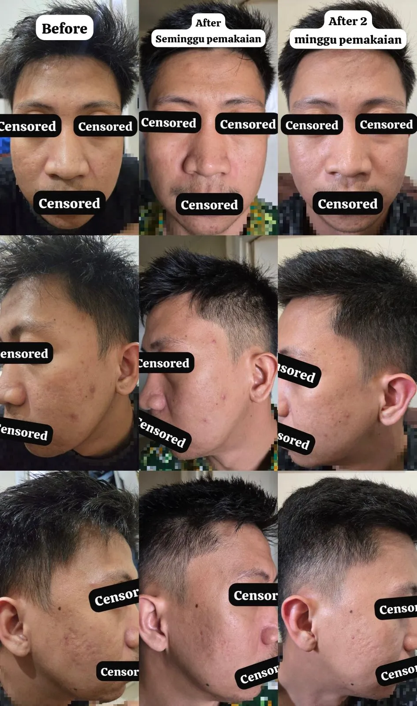
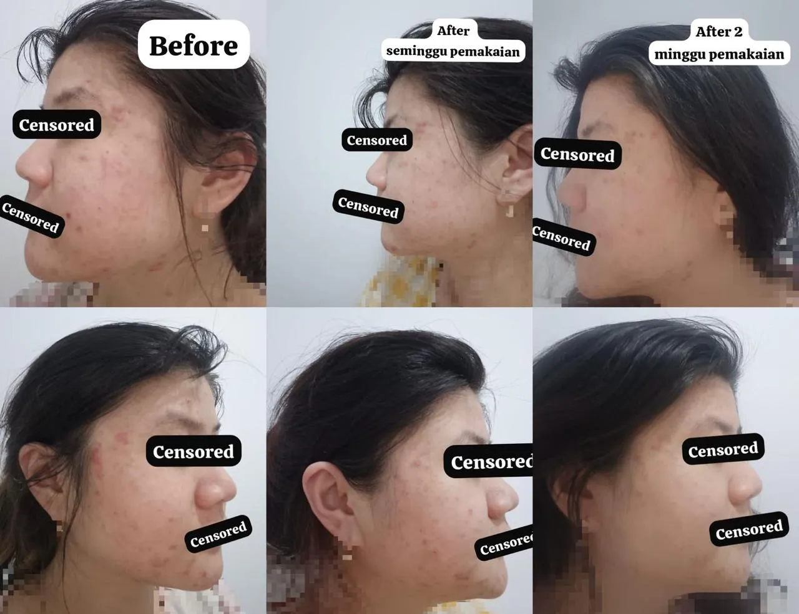
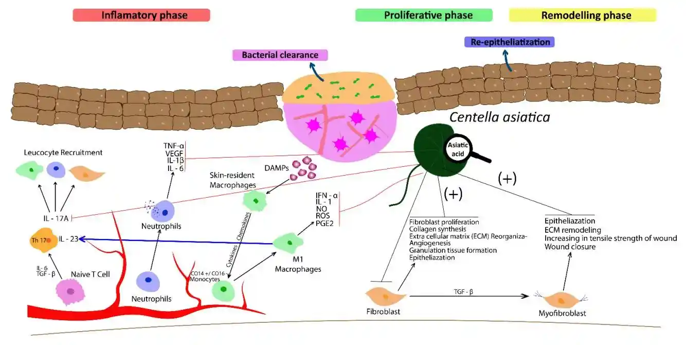
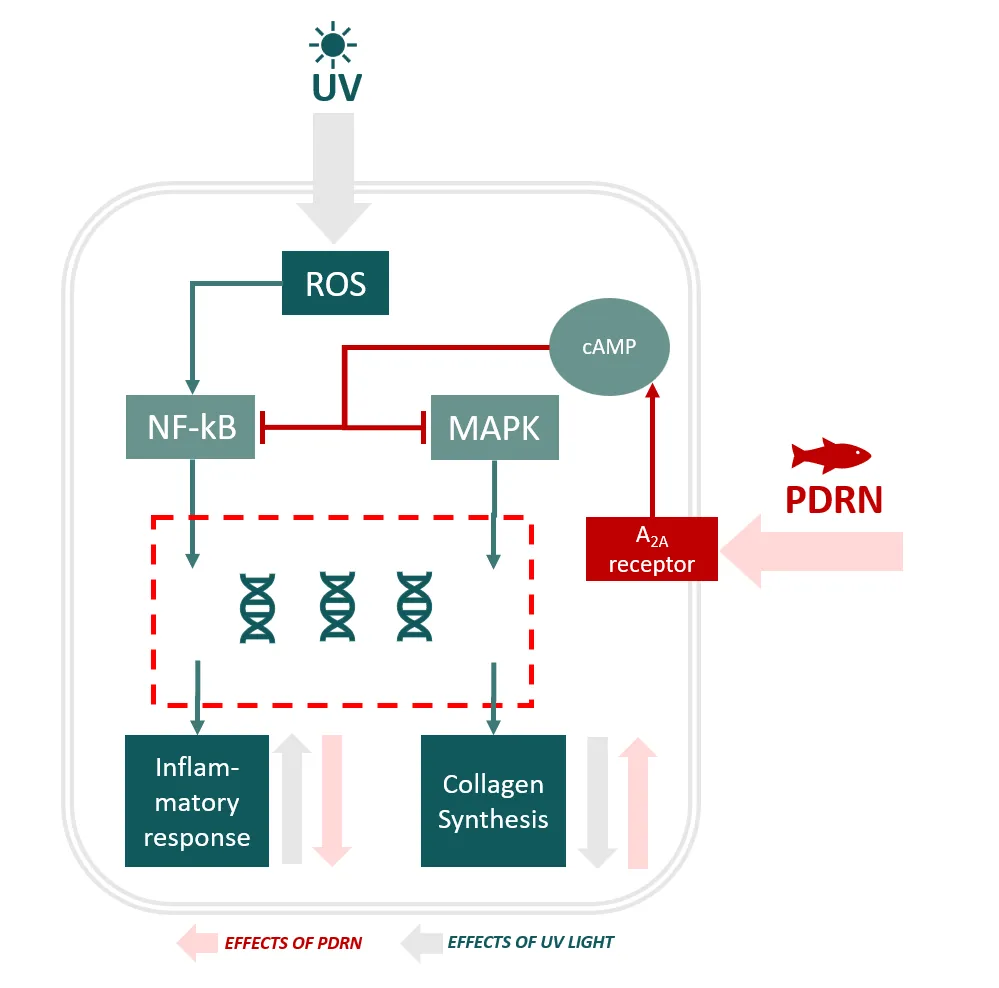
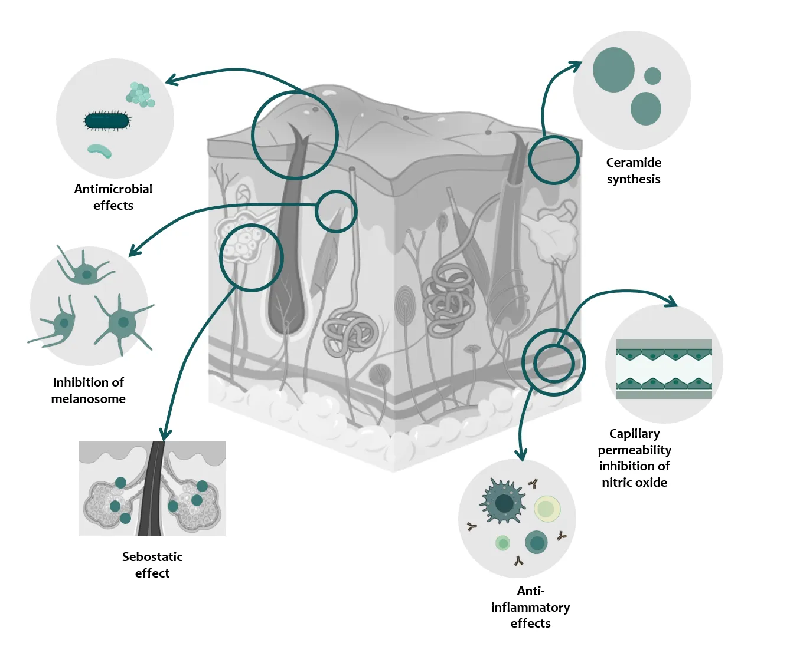
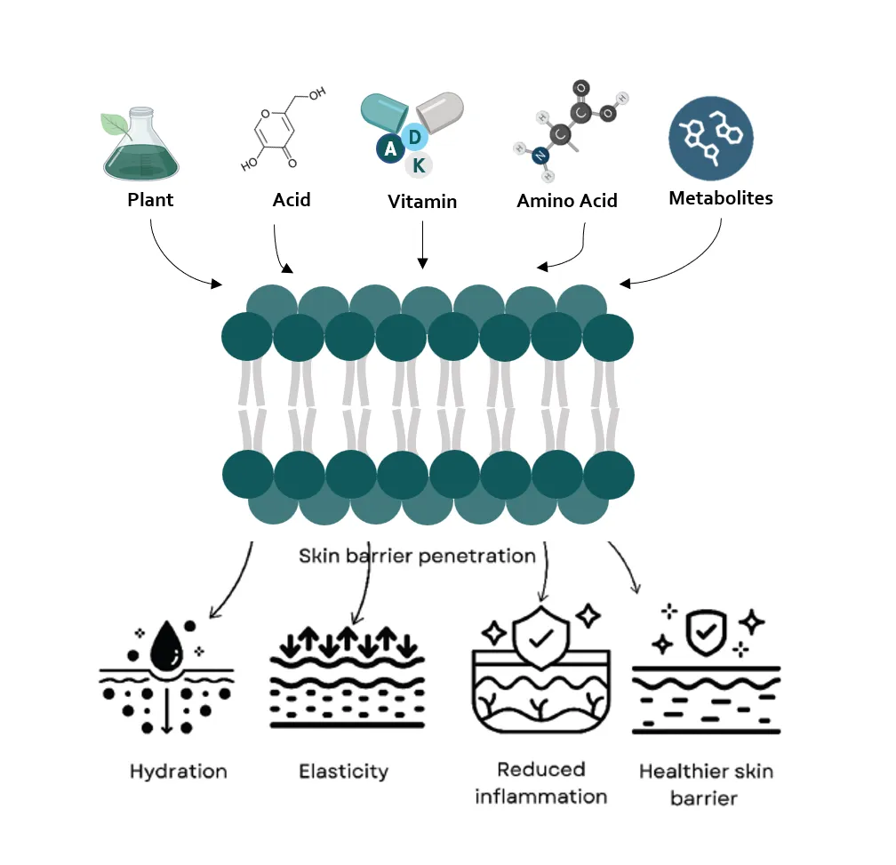
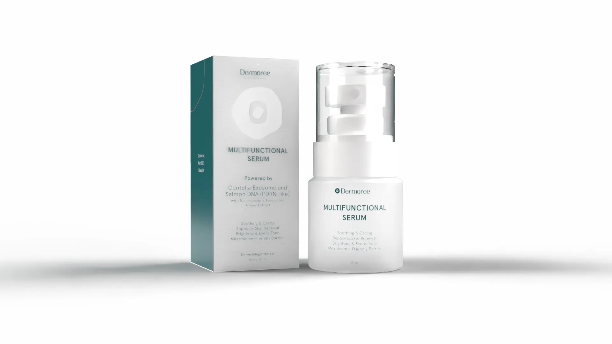

“Kulit saya sangat sensitif bahkan bisa merah berkerak klo berminyak (radang/inflamasi). Biasanya saya memakai steroid utk menghilangkan inflamasi tersebut. Sekarang dgn serum ini, inflamasi saya hilang dan saya terbebas dr steroid. Terlebih lagi, jerawat saya berkurang dan wajah lebih cerah.”
Testimony & Scientific Review
Real results on human skin, validated by dermatological science.
Real User Experiences
Honest feedback from our few weeks clinical observation participants, showcasing visible benefits of Dermoree Multifunctional Serum.
“Setelah melalui breakout parah yang meninggalkan bekas hitam dan kemerahan dan menggunakan serum ini, bekas hitam saya dan peradangan berkurang. Wajah juga semakin cerah dan kemunculan jerawat berkurang”
Participant 1 Clinical Scoring (0–10)
Soothing and caring
10
Support skin renewal
8
Brightens & even tone
9
Microbiome friendly barrier
9
Participant 2 Clinical Scoring (0–10)
Soothing and caring
9
Support skin renewal
8
Brightens & even tone
8
Microbiome friendly barrier
9
Observed Skin Improvement per Week
Visual observation after consistent application. Image presented without retouching or digital enhancement.


Individual results may vary depending on skin condition and consistency of use.
Scientific Foundation
Evidence-based analysis of our multifunctional bioactive compounds, demonstrating their individual and synergistic benefits for skin health.
Abstract
This review synthesizes scientific evidence supporting the efficacy of key bioactive compounds—Centella asiatica exosomes, DNA salmon (PDRN), niacinamide, and fermented honey. Each compound's mechanisms of action and documented benefits are discussed, highlighting their synergistic potential to deliver scientifically-backed results.

Centella Asiatica Exosomes (CICA-EVs)
Mechanism of action: CICA-EVs have emerged as potent bioactive agents in skincare due to their ability to deliver beneficial molecules directly to skin cells. Upregulates collagen gene expression and reduces UV-induced inflammation.
Biolgical implication: Soothing and caring support for skin repair and visible redness reduction.

DNA Salmon (PDRN)
Mechanism of action: Polydeoxyribonucleotide (PDRN), derived from salmon DNA exerts therapeutic effects by activating adenosine A2A receptors, which stimulate collagen synthesis and angiogenesis.
Biolgical implication: Support skin renewal by encouraging collagen synthesis and recovery.

Niacinamide (Vitamin B3)
Mechanism of action: Acts as a precursor to NAD+ and NADPH, essential for cellular energy metabolism. Inhibits melanosome transfer to reduce hyperpigmentation and enhances ceramide synthesis to strengthen the skin barrier.
Biolgical implication: Brightens and helps even tone while strengthening skin resilience.

Fermented Honey
Mechanism of action: Utilizing Gluconobacter species, fermented honey offers unique benefits for fostering a healthy skin microbiome and gentle exfoliation. The fermentation process produces gluconic acid for natural cellular turnover.
Biolgical implication: Microbiome friendly barrier support with soothing hydration.
Scientific References
- Chang TM, et al. (2025). In Vitro Characterization of Centella asiatica Extracellular Vesicles and Their Skin Repair Effects in a UVB-Irradiated Mouse Model. Int J Mol Sci.
- Oh N, et al. (2025). Versatile and Marvelous Potentials of Polydeoxyribonucleotide for Tissue Engineering and Regeneration. Biomater Res.
- Khan A, et al. (2022). Polydeoxyribonucleotide: A promising skin anti-aging agent. Chinese Chemical Letters.
- Marques C, et al. (2024). Mechanistic Insights into the Multiple Functions of Niacinamide. Antioxidants.
- Essmat RA, et al. (2024). Fermentation-derived compounds and their impact on skin health and dermatology. Innov Med Omics.
- McLoone P, et al. (2024). Honey phytochemicals: Bioactive agents with therapeutic potential for dermatological disorders. Phytotherapy Research.

Dermoree bridges the gap between honest user experiences and rigorous scientific validation, ensuring your skin receives care that is both felt and proven.